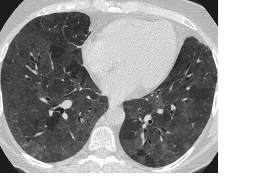

Ficha del catálogo
Neumonitis por hipersensibilidad
- Sistema
- Respiratorio
- Modalidad
- TC
- Región
- Tórax
- Dificultad
- Avanzado
Reacción inmunológica del pulmón frente a la inhalación repetida de antígenos orgánicos, como los presentes en aves, humedades o ciertos ambientes laborales. Puede cursar de forma aguda tras una exposición intensa o de forma crónica con evolución a fibrosis. La anamnesis ambiental es tan importante como la imagen.
Técnica
Tomografía de alta resolución en inspiración y espiración, esta última imprescindible porque el atrapamiento aéreo es uno de los hallazgos más orientativos.
Qué observar
- Nódulos centrolobulillares mal definidos en vidrio deslustrado
- Vidrio deslustrado parcheado de distribución difusa
- Atrapamiento aéreo lobulillar en la serie espiratoria
- Patrón de tres densidades combinando pulmón normal, vidrio deslustrado y atrapamiento
- Predominio en campos medios con relativo respeto de las bases
- Fibrosis con reticulación y bronquiectasias de tracción en las formas crónicas
Hallazgos
Nódulos centrolobulillares en vidrio deslustrado con áreas de atrapamiento aéreo lobulillar y distribución de predominio en campos medios.
Perlas
La combinación de tres densidades distintas en el mismo corte, con zonas normales, vidrio deslustrado y atrapamiento aéreo, es muy sugestiva. La distribución en campos medios y superiores ayuda a separarla del patrón de fibrosis pulmonar idiopática, que predomina en bases.
Diagnóstico diferencial
- Fibrosis pulmonar idiopática
- Panalización basal y subpleural sin atrapamiento lobulillar.
- Bronquiolitis respiratoria del fumador
- Nódulos centrolobulillares en campos superiores con antecedente tabáquico.
- Neumonía atípica
- Curso agudo febril con resolución tras tratamiento.
Simuladores
- Atrapamiento fisiológico en bases
- Infección vírica reciente
- Edema pulmonar leve
Por modalidad
- RX
- Poco específica, puede ser normal
- TC
- Diagnóstica cuando el patrón es característico y hay exposición identificada
Protocolo
Alta resolución en inspiración máxima y en espiración forzada, sin contraste, con reconstrucciones finas.
Clasificación
Se distinguen formas no fibróticas y fibróticas, distinción con implicación pronóstica directa.
Errores frecuentes
- Omitir la serie espiratoria y perder el atrapamiento aéreo
- No investigar la exposición ambiental en la historia clínica
- Etiquetar como fibrosis idiopática una forma fibrótica de esta enfermedad

neumonitis hipersensibilidad alveolitis alergica atrapamiento aereo centrolobulillar exposicion aves